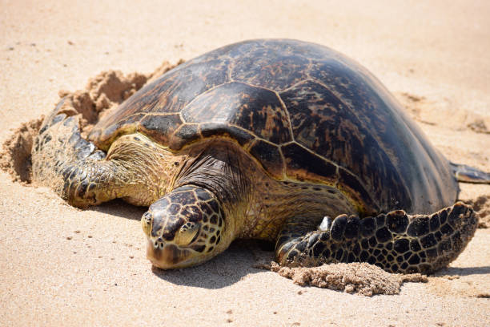

About Olive Ridley Sea Turtles
Olive Ridley sea turtles are small to medium-sized marine turtles known for their olive-colored carapace. They can be found in warm waters of the Pacific, Indian, and Atlantic Oceans. Olive Ridleys are known for their synchronized nesting events, known as "arribadas," where thousands of females come ashore to lay their eggs.
Habitat
Olive Ridley sea turtles inhabit both coastal and oceanic waters. They are highly adaptable and can be found in a variety of habitats, including estuaries, coral reefs, and open ocean. These turtles are omnivorous and feed on a diet that includes jellyfish, algae, crustaceans, and other marine organisms.
Conservation
Olive Ridley sea turtles face threats from habitat degradation, pollution, bycatch in fishing gear, and illegal egg collection. Conservation efforts focus on protecting nesting beaches, implementing turtle-friendly fishing practices, and raising awareness about the importance of preserving these turtles and their habitats.